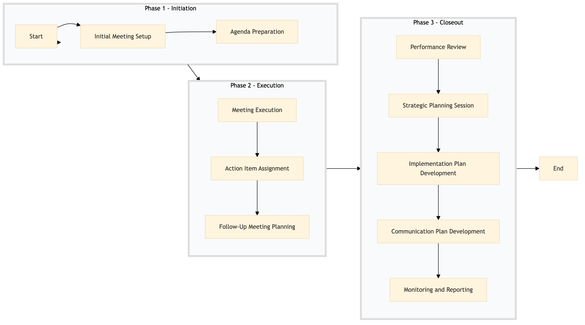

| Role | Steps |
|---|---|
| Asset Manager | 1.1 1.2 2.1 2.2 3.1 3.2 3.3 3.4 3.5 3.6 |
| Owner | 2.1 2.2 3.1 3.2 3.3 3.6 |
| Step | Name | Role | System | Input | Output | KPI | Dec? | Exc? | Pain Point / Risk |
|---|---|---|---|---|---|---|---|---|---|
| 1.1 | Initial Meeting Setup | Asset Manager | Oracle OPERA Cloud, Book4Time | Agreement details, calendar availability | Scheduled meeting confirmation | Meeting scheduled within 2 days | N | Y | Managing conflicting schedules between multiple stakeholders. |
| 1.2 | Agenda Preparation | Asset Manager | Microsoft Power BI, Oracle OPERA Cloud | Hotel performance data, market trends | Meeting agenda with key points for discussion | Agenda ready within 1 day of meeting confirmation | N | Y | Accessing and compiling diverse data sources efficiently. |
| 2.1 | Meeting Execution | Asset Manager, Owner | Knowcross HotSOS, Book4Time | Scheduled meeting, prepared agenda | Minutes of the meeting | Meeting held within scheduled time frame | Y | Y | Ensuring all stakeholders are engaged and contributing effectively. |
| 2.2 | Action Item Assignment | Asset Manager, Owner | Oracle OPERA Cloud, Birchstreet Procurement | Minutes of the meeting | Action items with responsible parties and deadlines | Action items assigned within 1 day after meeting | N | Y | Tracking and managing multiple action items across different teams. |
| 3.1 | Follow-Up Meeting Planning | Asset Manager | Oracle OPERA Cloud, Book4Time | Action item status, owner feedback | Scheduled follow-up meeting confirmation | Follow-up meeting scheduled within 1 week of action items assignment | N | Y | Coordinating follow-ups with busy stakeholders. |
| 3.2 | Performance Review | Asset Manager, Owner | Oracle OPERA Cloud, Microsoft Power BI | Hotel performance data, action item status | Performance review report | Review completed within 1 day before follow-up meeting | Y | Y | Analyzing and presenting complex performance metrics. |
| 3.3 | Strategic Planning Session | Asset Manager, Owner | Oracle OPERA Cloud, Salesforce | Performance review report, market insights | Strategic plan with goals and initiatives | Strategic plan finalized within 1 day after performance review | N | Y | Aligning short-term operational goals with long-term strategic objectives. |
| 3.4 | Implementation Plan Development | Asset Manager, Owner | Oracle OPERA Cloud, Birchstreet Procurement | Strategic plan, resource availability | Implementation plan with timelines and budgets | Implementation plan ready within 2 days after strategic planning session | N | Y | Balancing immediate needs with long-term investments. |
| 3.5 | Communication Plan Development | Asset Manager, Owner | Oracle OPERA Cloud, Salesforce | Implementation plan, stakeholder list | Communication strategy with milestones and touchpoints | Communication plan finalized within 1 day after implementation plan development | N | Y | Effective communication across diverse stakeholders. |
| 3.6 | Monitoring and Reporting | Asset Manager, Owner | Oracle OPERA Cloud, Microsoft Power BI | Implementation plan, performance data | Regular progress reports | Progress reports issued monthly | Y | Y | Consistently tracking and reporting on multiple initiatives. |
A structured process document for managing relationships between owners and asset managers at a Marriott full-service hotel, focusing on sales, marketing, and loyalty initiatives.